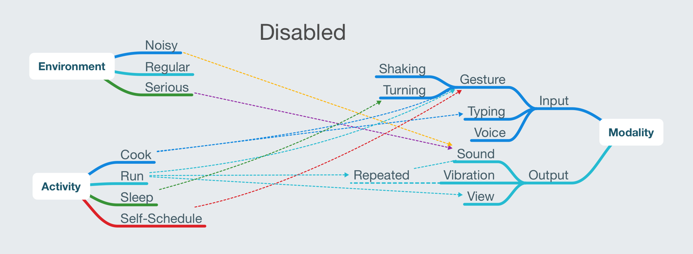
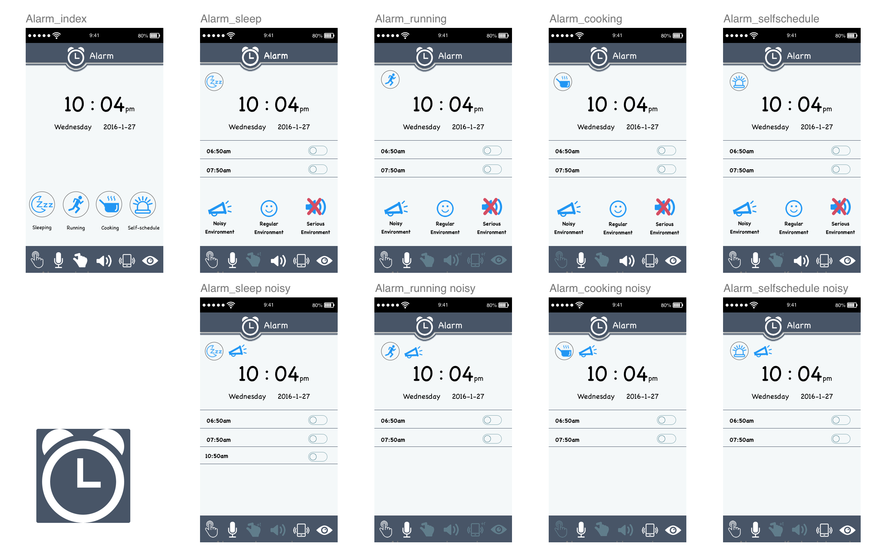
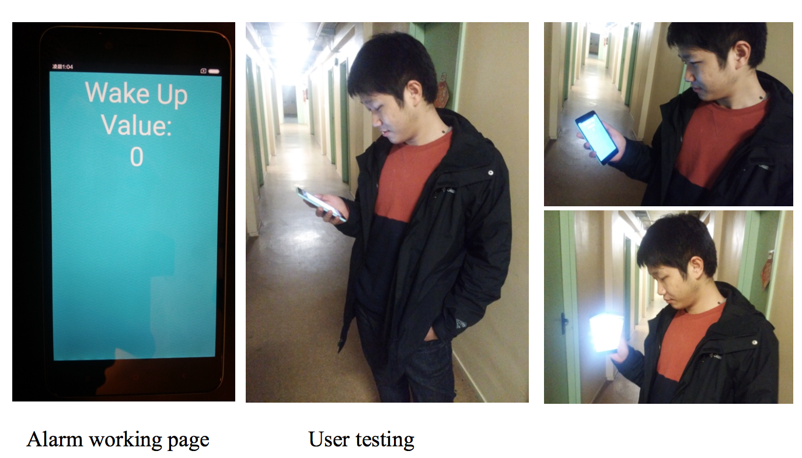

Timeline
Nov.2015 - Feb.2016
Timeline
Nov.2015 - Feb.2016
Location
Paris, France
My Role
Multimodal Interaction Design
Animation Design
Android Platform Development
User Test
Deliverables
Project ReportMultimodal Alarm (Multi-Alarm), which is a uncommon Android clock application considers about environment and people’s activities. Based on different concepts, the multi-alarm provides different input and ourput modalities, to make user feel more friendly and more convenient by using this.
People’s behaviors will be different during different contexts. For example, when people are running, they may use the alarm to remind them how many time they have run. As our observation, people usually tie their smartphone on their arm. In such situation, when the alarm works, people do not like to use hand to dismiss the clock. Because the alarm is tied in the arm which is inconvenient for them to use hand, also maybe they want to keep running and the hands are not free. Meanwhile, they more like to use voice input to dismiss the clock. Or in that situation, the alarm just rings once which functions as reminding and people do not need to dismiss it.
Based on our observations, we conclude some activities and environment people use alarm. Our context is devided into two part: environment and activities. Environment includes serious environment, regular environment and noisy environment. And the activities contain cooking, running self- schedule and sleeping.
The RDF graph shows the relations between different concepts and different modalities. It could help us to see clearly for following design.
Base on the design concept and RDF graph, we design the multimodal interface of Multi-Alarm.
This is my on-going individual training task for learning Principle by myself, please stay tuned for my new work...
There are some main problems we should solved in Android developing:
At present, the function in sleeping modality is working well. Therefore we did some usability test for this function. Since in sleeping activity, the truing gesture is disabled, users need to shake smartphone strongly to dismiss alarm. When the alarm rings, user can see the message (remind them to shake smartphone to dismiss alarm) in the interface which is as pictures below. Also, the user testing pictures are as below. After strong shaking the smartphone, the alarm can be dismissed.
